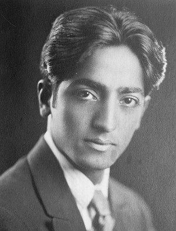

Le voyageur qui fait le tour de la Terre constate à quel point extraordinaire la nature humaine est identique à elle même aux Indes, en Amérique, en Europe, en Australie, partout. Et cela est surtout vrai dans les collèges et les universités. Nous sommes en train de produire, comme au moyen d’un moule, un type d’être humain dont l’intérêt principal est de trouver une sécurité, ou de devenir quelqu’un d’important, ou de passer agréablement son temps, en pensant le moins possible.
L’éducation conventionnelle ne nous permet d’atteindre que très difficilement une pensée indépendante. La conformité mène à la médiocrité. Être différent du groupe ou résister au milieu n’est pas facile et est souvent dangereux dans la mesure ou nous rendons un culte au succès. L’aspiration au succès – cette poursuite d’une récompense dans le monde matériel ou dans le monde soi disant spirituel, qui est une sécurité de recherche extérieure ou intérieure, le désir d’un confort ou d’un réconfort – tout ce processus étouffe le mécontentement, met fin à la spontanéité, et engendre la peur. Et la peur bloque la compréhension intelligente de la vie. Puis, avec l’âge, s’installent la paresse de l’esprit et l’indifférence du cœur.
En recherchant le confort, nous trouvons en général un coin tranquille dans la vie, où existe un minimum de conflits, et ensuite nous craignons de sortir de cette réclusion. Cette peur de la vie, cette peur de la lutte et des expériences nouvelles, tue en nous l’esprit d’aventure. Toute notre éducation, toutes les influences de notre milieu nous font redouter d’être différents de nos voisins, redouter de penser en opposition aux valeurs établies de la société, et nous rendent faussement respectueux de l’autorité et de la tradition.
Il est heureux que quelques personnes sincères existent, qui acceptent d’examiner nos problèmes humains sans les préjugés de droite ou de gauche ; mais chez la majorité d’entre nous il n’y a pas un réel esprit de mécontentement, de révolte. Lorsque, sans intelligence, nous cédons au milieu, l’esprit de révolte qui est en nous doit forcément dépérir et, bien vite, nos responsabilités l’achèvent.
La révolte est de deux sortes : il y a la révolte violente qui n’est qu’une réaction inintelligente contre l’ordre existant, et la profonde révolte psychologique de l’intelligence. L’on voit de nombreuses personnes ne se révolter contre les orthodoxies établies que pour tomber dans des orthodoxies nouvelles, dans de nouvelles illusions, dans des satisfactions personnelles inavouées. Ce qui se produit en général c’est que nous ne rompons avec un groupe ou un ensemble d’idéals que pour rejoindre un autre groupe et embrasser de nouvelles idéologies. Nous créons ainsi un nouveau type de pensée, un moule contre lequel il nous faudra encore une fois nous révolter. Une réaction ne peut qu’engendrer une opposition ; toute réforme engendre la nécessité de nouvelles réformes.
La révolte intelligente n’est pas une réaction : elle accompagne la connaissance de soi, cette connaissance qui est perception aiguë de nos pensées et de nos sentiments. Ce n’est qu’en affrontant l’expérience telle qu’elle vient à nous, sans chercher à fuir ce qu’elle a de troublant, que nous réussissons à maintenir l’intelligence sur le qui-vive. Cette intelligence hautement éveillée est l’intuition, notre seul vrai guide dans la vie.
Jiddu Krishnamurti - De l’éducation
La vrai éducation commence par celle de l’éducateur. Il doit se comprendre lui-même et être affranchi des façons de pensées stéréotypées. Car son enseignement est à l’image de ce qu’il est. Lorsque l’instruction qu’il a reçue n’a pas une base de vérité, que peut-il enseigner, si ce n’est le savoir mécanique qu’il possède ? Le problème, donc, n’est pas l’enfant mais les parents et le maître. Le problème est l’éducation de l’éducateur. (…) Nous attacher à notre propre rééducation est beaucoup plus utile que nous faire du souci pour le bien-être futur et la sécurité de notre enfant.